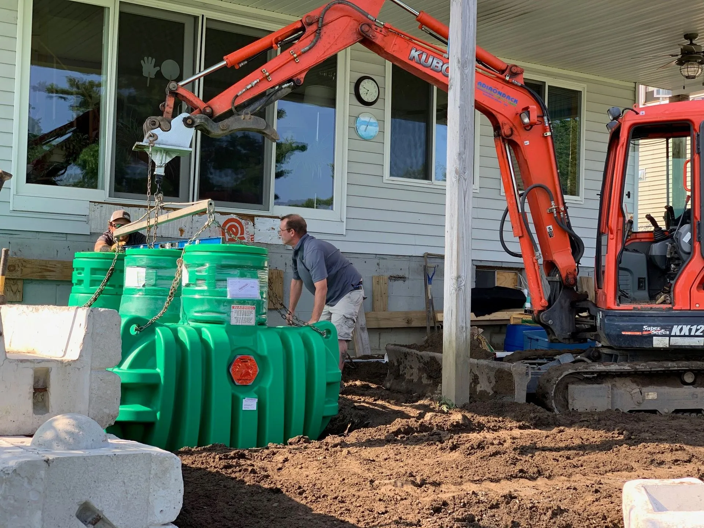
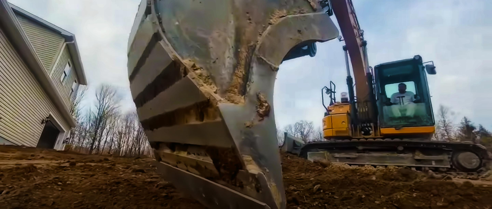
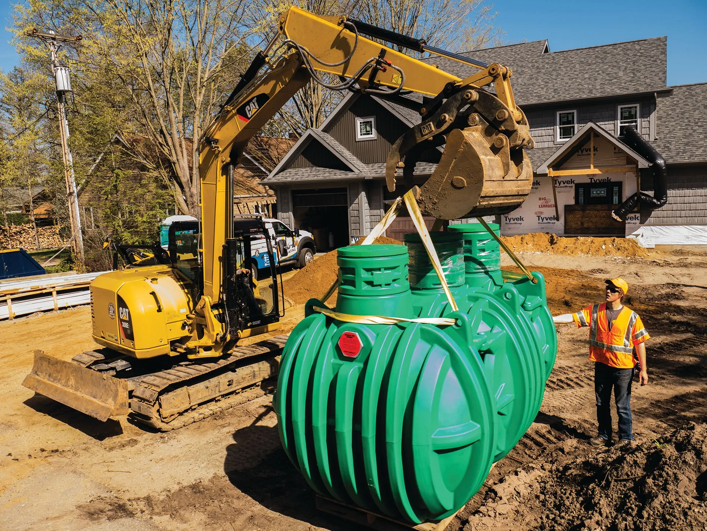
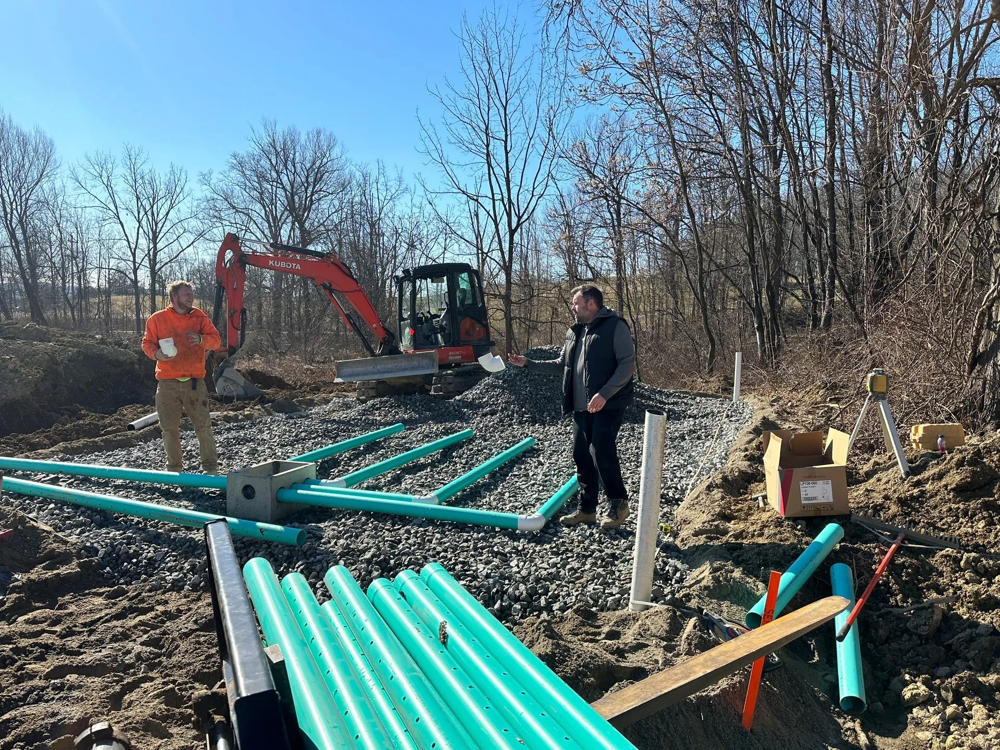
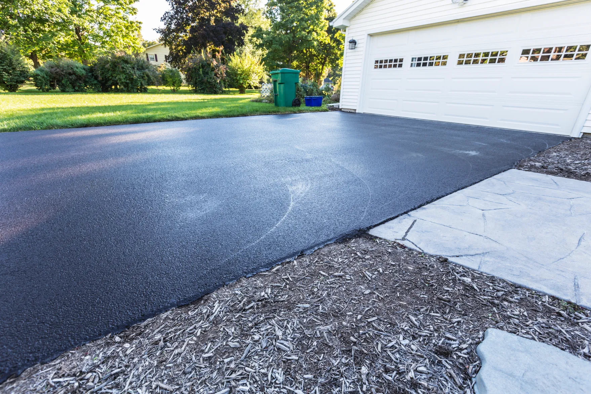
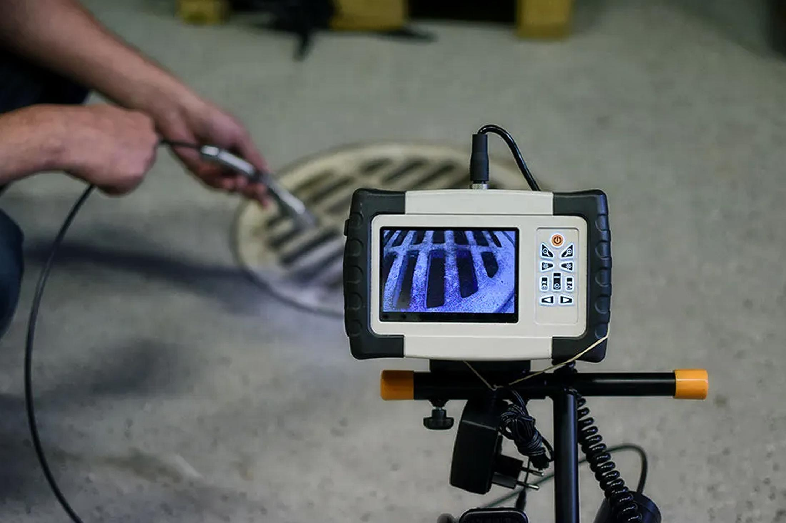
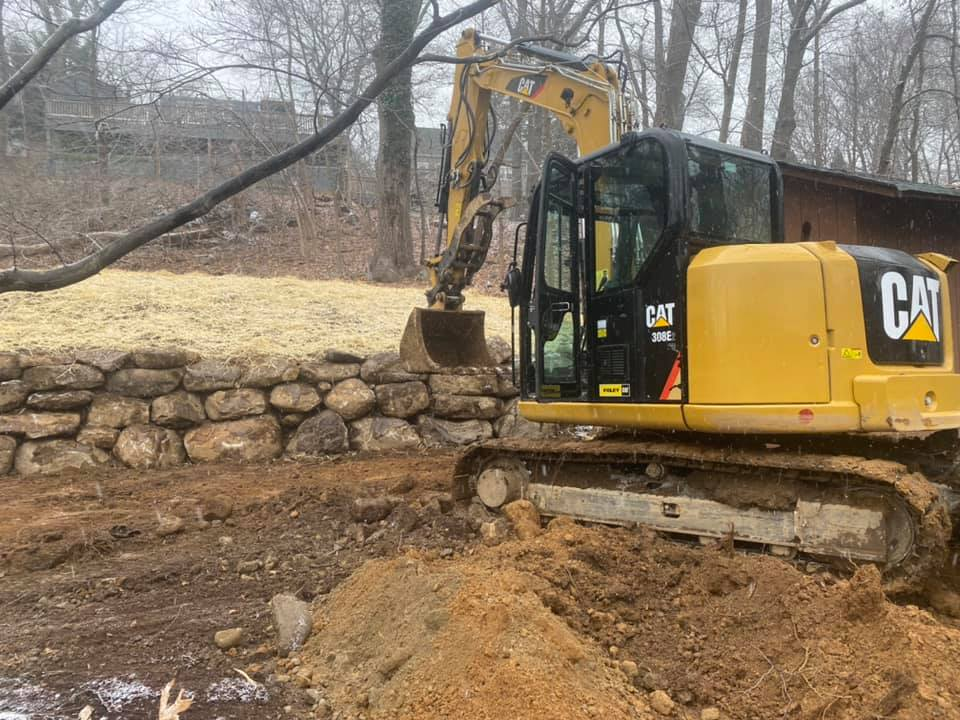
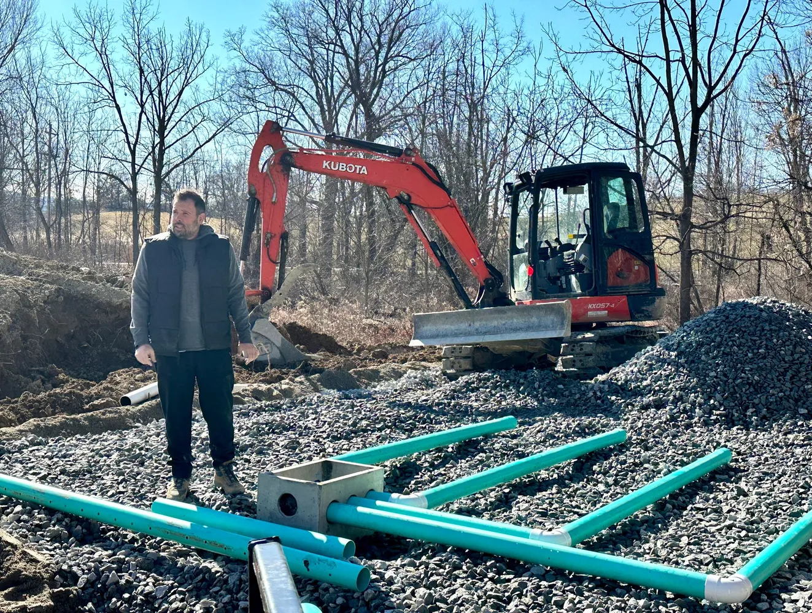
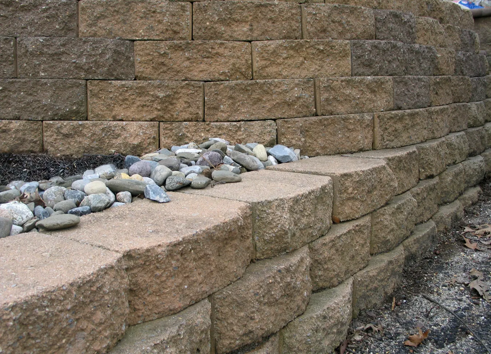
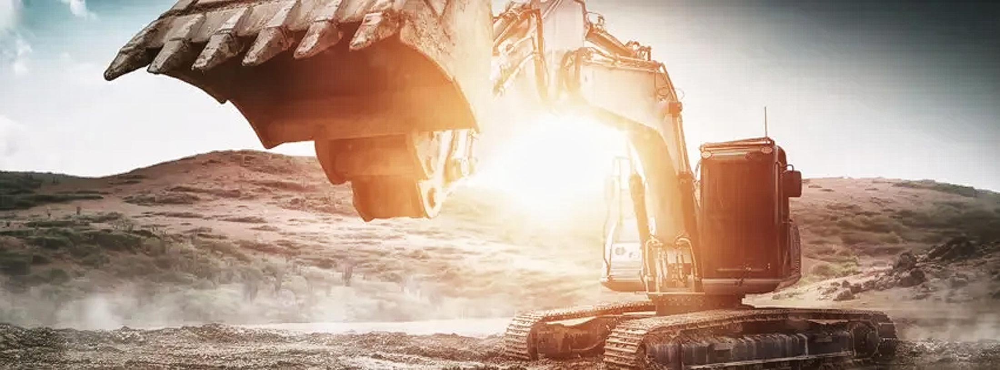

01
Tank and field set
Tank, risers and stone bed placed to grade before backfill.

From the granite ledges of Kinnelon to the lakefronts of Sparta, we handle the clearing, the digging, the septic engineering and the final grade. One accountable crew, one firm number in writing. And when a failed inspection meets a closing date, we are the call that fixes it.
Excavating New Jersey LLC is an owner-operated excavation and septic contractor based in Wantage, serving Sussex and northern Morris County for nearly 20 years. We design, permit and install septic systems to NJDEP Chapter 199 (N.J.A.C. 7:9A), and handle land clearing, drainage, sewer work and site excavation on rocky, high-water-table ground.
Tank, risers and stone bed placed to grade before backfill.

Set, plumbed and inspected by the crew that designed the system.

Backfilled, walled and finish-graded ready for closing day.

Seepage pits placed in open cut, parking restored after.

Full-size work in small yards without wrecking what stays.
The septic is rarely the hard part. The hard part is not knowing the number while everyone in the sale waits on you. So the number comes first, in writing, and it holds.
Not sure how to pay for it? Read our plain-English guide to 203K loans and pay-at-closing for a septic replacement, so you can walk into the lender conversation already knowing the shape of it.

From failed inspections to aging systems, we handle septic installation, repair, and replacement from start to finish. If a malfunctioning septic system is holding up your home sale or threatening your property’s functionality, our licensed, insured, and certified septic installers respond quickly with reliable solutions. We offer “Pay at Closing” options and work with 203K loans to make the process easier during real estate transactions.

From start to finish, our skilled team provides septic engineering and design you can trust. We handle the complete engineering process: soil logs, perc tests, and stamped engineering prints. Whether your property has a high water table, limited space, or has been called “unbuildable,” we specialize in raised mound systems and advanced treatment units (ATUs) that turn tough lots into viable building sites.
What we deliver:

We grade to exact specifications for foundation excavation, so your contractor can start immediately. Rock removal, ledge blasting, and boulder retaining walls are standard work in Sussex County, and we have the equipment and nearly 20 years of experience to handle it without delays. From utility trenching to driveway construction, land clearing to foundation prep, we deliver reliable site work that protects your property and sets your project up for long-term success.
What we do:

Whether you’re tying into municipal systems or addressing sewer line failures, we trench, install, and connect sewer lines with the precision and attention to detail you’d expect from licensed, insured professionals. Our utility trenching includes proper backfill and compaction, so you won’t deal with settling or drainage issues down the road.
What we provide:
Free. We locate the system, read the grade and tell you what we see.
Written and itemised. Not a range that grows once the digging starts.
Soil testing, design and township approval under N.J.A.C. 7:9A.
Installed and inspected by the same outfit, documented for your file.

Here you are working against three forces: granite, groundwater and regulation. If your contractor does not know the difference between the glacial till in Vernon and the iron-heavy rock in Rockaway Township, your timeline and budget are already at risk. We do not guess. We know the ground.
In Kinnelon, Smoke Rise and Vernon you can rarely dig more than a few feet without hitting bedrock. We own our heavy-duty hydraulic breakers, we do not rent and wait. They come along on every job where the geology demands it.
When the spring thaw hits, high water tables in Jefferson, Mt. Olive and around Lake Hopatcong turn yards into sponges. We engineer drainage and septic systems for seasonal groundwater, so the property stays dry all year.
Much of Northwest New Jersey sits under the NJ Highlands Act, where environmental compliance is mandatory, not optional. You get one partner who speaks the language of both the shovel and the permit office.
Every submission is built from your property's actual soil logs and grade. That is the difference between a permit that clears and a permit that comes back, and it is why our estimates hold.
Based at 406 County Rd 565 in Wantage. We stay inside Sussex and northern Morris County on purpose, because knowing the ground, the seasonal drainage and the local inspectors is most of the job.
Steep lots, rock near the surface, and shoreline setbacks that quietly eliminate half the yard. Designed for Sparta conditions from the first test pit.
Recent job: septic replacement for a home sale, Oct 2025
Our equipment is built for the heavy glacial soil and rocky terrain here.
Recent job: full septic replacement with design, Oct 2025
Projects throughout the county seat and the surrounding townships.
Lake Hopatcong is the largest lake in New Jersey, and the lots around it sit tight, sloped and close to the water table. Setbacks decide the design here before anything else does.
Our home base. We are your neighbors, and we know every soil type and every seasonal drainage pattern.
Recent job: septic repair and replacement, Aug 2024
The local choice for Lake Shawnee septic replacements on high-water-table lots.
Recent job: septic system replacement, Oct 2025
Digging in Smoke Rise takes serious equipment and clean work in neighborhoods with strict access rules.
From Green Pond Road to White Meadow Lake, we handle the iron-heavy soil that breaks lesser equipment.
Mound systems and curtain drains engineered for the wet conditions near Budd Lake.
“He was in the machine right alongside his crew getting the job done.”F. S. · Google review

Excavating New Jersey LLC is not a franchise. Mike White has run this owner-operated outfit for nearly 20 years, and he is the one reading the grade, pitching the pipe and filing the permits on your project. When you call, you talk to the person who oversees the job from first site evaluation to final inspection.
The standard is the same on a Route 23 commercial system or a family's tank in Hopatcong: meticulous work, transparent pricing, a site left cleaner than we found it.

We had an offer on the house in December under the condition we replace the septic. Excavating New Jersey worked diligently through the holidays and multiple snow storms and sensitive neighbors and demanding inspectors from both the town and county to get the job done… A total pro. Highly recommend.
They handled everything. Engineering of the septic system, acquiring all the needed permits and inspections… Mike is also a true owner operator, he didn’t just send a crew of guys to do the work he was in the machine right alongside his crew getting the job done.
They were professional, efficient, and clearly knew what they were doing. The work was done on time and to a very high standard. The stone walls look amazing, and everything was handled with care and attention to detail.
Often yes. The health department usually sets the pace, not the digging. After a site visit we can tell you whether your date is realistic, and we will say so plainly if it is not.
The soil, the slope and the code decide it, which is why we do not quote over the phone. The site evaluation and the written estimate are free, and the number we give is the number we hold.
In many home-sale situations, yes. We will walk through how it works for your sale and what your attorney or lender needs from us.
Sometimes a repair genuinely holds. We would rather tell you that than sell you a system you do not need.
Yes. Soil logs, perc tests, design, TWA permits and health department approval under NJDEP Chapter 199 are ours to chase, not yours.
Yes. We own heavy-duty hydraulic breakers for exactly this ground, from Smoke Rise granite to the iron-heavy rock around Rockaway Township. Rock changes the plan and the price, and the written estimate spells that out before we start.
Yes. We install advanced treatment systems, including Singulair Green units, where lots are tight or environmentally sensitive. They treat wastewater to a higher standard and can rescue sites a conventional field cannot.
Yes. We build commercial septic and site work across Sussex and northern Morris County, from Route 23 businesses to larger developments, with engineering and TWA permitting handled in house.

Stop coordinating three contractors. Send the address and what the ground is doing, and you will have a firm written number and a plan, whether you are building, fixing, or racing a closing date.
(973) 702-0655